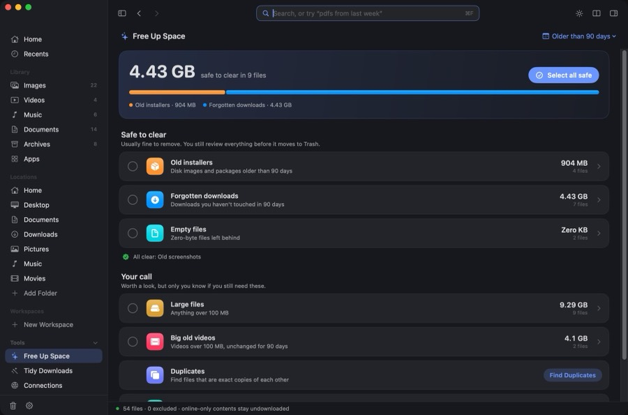

Best Finder alternative for Mac (2026)
Updated . Eight apps compared. Prices checked on each developer’s own site that day.
What Mac users actually want from a Finder alternative
The top Google result for this search is a Reddit thread on r/MacOS with more than 170 replies. Most answers name an app with two panes. But look at what people actually complain about in threads like it, and two panes only fix part of the list:
- I know I downloaded it, I just can’t find it.
- Spotlight finds everything except the file I want.
- My disk is full and I have no idea what’s using it.
- I want to move files between two folders without juggling windows.
- I need to get files on and off a server.
Every app on this list handles the last two. Only one handles the first three, and those are the ones that cost you time every day. So we judged all eight on how quickly they get you to the file you need and how safely they free up space, as well as how well they move files.
The comparison table
| App | Find a file by describing it | Words inside screenshots and PDFs | Downloads by website | Free up space, reviewed first | Duplicate finder | Two panes | Price |
|---|---|---|---|---|---|---|---|
| MacExBest overall | Yes | Yes | Yes | Yes | Yesbyte for byte | Yes | $9.99 once |
| ForkLift 4 | No | No | No | No | No | Yes | $19.95, 1 year of updates |
| Path Finder | No | No | No | Partlysize browser | No | Yes | $29.95 a year |
| Commander One | No | No | No | No | No | Yes | Free; PRO $29.99 |
| QSpace | No | No | No | No | No | Yes | $29.99 list, plus extensions |
| Bloom | No | No | No | No | No | Yes | $16 |
| Marta | No | No | No | Partlydisk usage view | No | Yes | Free |
| Nimble Commander | No | No | No | No | No | Yes | Free |
“No” means the feature is not listed on the developer’s own site or feature list on 18 November 2026. Prices in US dollars from each developer’s store that day.
1. MacEx: best Finder alternative overall Our pick
Every other app on this list starts from folders: open the right one, then work inside it. That’s fine when you know where everything is. MacEx starts from your files. It gathers everything in your folders into one library sorted by kind, so the file you need is a sentence away, not five folders deep. Your files stay exactly where they are.
Find any file by describing it
Type what you remember, the way you’d say it: pdfs from last week over 5 mb, pdfs from gmail last month, zips bigger than 1gb older than 6 months. MacEx turns your words into filters you can see and edit, so you always know why a file showed up. Press ⇧⌘Space from any app to search without opening the window.

Search the words inside screenshots and scanned PDFs
Turn on Text Search and MacEx reads the text in your images and PDFs, on your Mac. Search screenshots with wifi password and the photo of your router label comes up. You can also copy the text out of up to 20 images or PDFs at once. None of the other seven apps lists anything like it.
Every download, sorted by where it came from
Press ⇧⌘J and your downloads are grouped by website: Gmail, Slack, GitHub and the rest. Search zips from github and every release you downloaded is listed. Finder shows this one file at a time in Get Info; MacEx shows all of them at once.

Free up gigabytes without the fear
Free Up Space lists what’s safe to clear: old installers, forgotten downloads, old screenshots, big old videos, unused apps, empty files, and duplicates confirmed byte for byte. You see every file first. Only what you select goes to the normal Trash, and MacEx remembers the last 500 files it moved so you can put any of them back. Nothing is ever deleted for good.

Everything you’d expect from a file manager, too
Split View puts two folders side by side: F5 copies and F6 moves to the other pane. Batch rename shows every new name before it applies and flags clashes first. You also get zip and unzip, Finder tags on many files at once, workspaces that gather files from different folders without moving them, folder sizes in list view, undo, SMB shares and SFTP servers in the same window. Name clashes ask Keep Both or Skip, never Replace, so you can’t overwrite a file by accident.
Private by design
Indexing, search and text recognition all run on your Mac. File names and contents are never uploaded. MacEx connects only to activate your license and, if you turn them on, to check for updates.
Verdict: the only Finder alternative here that fixes “where did that file go?” and “why is my disk full?” as well as moving files. At $9.99 once, it also costs the least of any paid app on the list.
2–8. The other Finder alternatives
These are the apps that come up most in Reddit threads and roundups. They’re all capable at moving files. None of them helps you find a file you can’t place or tells you what’s safe to delete, and that’s where MacEx pulls ahead.
2. ForkLift 4
The most-recommended dual-pane app, and a strong one for transfers: tabs, folder sync, and connections to SFTP, FTP, WebDAV, Amazon S3, Google Drive, Dropbox and more. It doesn’t list plain-language search, text recognition or cleanup tools. The license also stops getting updates after a year unless you buy again.
Compared with MacEx: about twice the price, built for moving files rather than finding them.
3. Path Finder
A power-user toolbox with dual panes, a Drop Stack, a built-in Terminal and movable panels. Its Size Browser shows which folders are big, but deciding what’s safe to remove is up to you. The amount on screen takes a while to learn.
Compared with MacEx: a yearly cost, against MacEx’s single $9.99, and no guided cleanup.
4. Commander One
The Mac take on Total Commander: two panels, unlimited tabs and custom hotkeys for free. Servers and cloud drives need the PRO pack, and the Mac App Store edition leaves out some PRO features. The look is utilitarian rather than Mac-like.
Compared with MacEx: free to start, but three times the price once you need servers, with no smart search or cleanup.
5. QSpace
Looks like Finder, with 12 window layouts and tabs. Server connections, advanced batch rename and the Stash Shelf are each sold separately, so the price climbs as you add what you need.
Compared with MacEx: pay for the layouts, then pay again for extras. MacEx includes everything for $9.99.
6. Bloom
A tidier Finder with dual and quad-pane layouts, workspaces and a quick Go to Folder panel. Its search matches keywords within folders you choose; it doesn’t list search by date, size or where a file came from.
Compared with MacEx: costs more and searches less.
7. Marta
A fast, keyboard-driven two-pane app with Lua plugins. You set it up by editing a text configuration file, and it’s still below version 1.0. It has a disk usage view but no cleanup suggestions.
Compared with MacEx: free if you enjoy configuring things; not built for everyday users.
8. Nimble Commander
A classic commander-style app: quick, keyboard-first, with FTP, SFTP and WebDAV. It’s designed for people who already think in two panels and shortcuts.
Compared with MacEx: a tool for power users, with no help finding or cleaning up files.
What you pay
- MacEx, everything included, once$9.99
- Bloom, once$16
- ForkLift 4, 1 year of updates$19.95
- Path Finder, every year$29.95
- Commander One PRO, once$29.99
- QSpace Pro, list price before extensions$29.99
Commander One’s free version, Marta and Nimble Commander cost nothing, and none of them offers search by description, text search in images or guided cleanup at any price. MacEx is a one-time purchase with no account.
Which one should you get?
- You lose files, fight with Downloads, or run low on space: MacEx.
- You want one app for finding, cleaning and everyday file work: MacEx.
- You want to spend the least on a paid app: MacEx, $9.99 once.
- You sync folders with remote servers all day: ForkLift is built for that, and it runs fine next to MacEx.
Frequently asked questions
What is the best file manager for Mac?
For most Mac users, MacEx. It works in two panes like the other Finder alternatives, and it’s the only one of the eight compared here that finds files from a description, searches words inside screenshots and scanned PDFs, groups downloads by the website they came from, and frees up space with a review step. It costs $9.99 once.
Is there a free Finder alternative for Mac?
Commander One has a free version, and Marta and Nimble Commander are free. All three are two-panel file managers for moving files. None of them finds files from a description or helps you free up space the way MacEx does.
Does MacEx replace Finder?
MacEx works alongside Finder. It reads your existing folders, leaves files where they are unless you move them, uses the same Finder tags, and sends removed files to the normal Trash. Finder keeps running the Desktop and the Open and Save dialogs, as it does with every Finder alternative.
Can you cut and paste files on a Mac?
Yes. In Finder, copy with ⌘C, then press ⌥⌘V in the destination to move the file. In MacEx Split View, select files and press F6 to move them to the other pane.
Is it safe to clean up files with MacEx?
Yes. MacEx shows every file before anything moves, moves only what you select to the normal Trash, and keeps a history of the last 500 files it moved so you can put them back. Nothing is deleted for good.
Sources
- ForkLift 4 store and license terms (Binarynights)
- Path Finder pricing and features (Cocoatech)
- Commander One features, free vs PRO (Eltima)
- QSpace pricing and extensions (awehunt)
- Bloom
- Marta File Manager
- Nimble Commander (GitHub)
- Everything MacEx can do, with limits
Related
MacEx runs on macOS 14 or later, Apple silicon and Intel. $9.99 once. No account, no subscription.